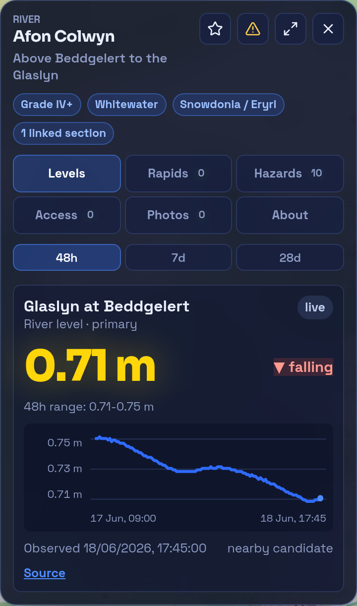

Typed reports
Hazards, access updates, condition reports, photos, and features have different fields, review needs, and expiry behaviour.
Community data
RiverLaunch.info is designed so photos, hazards, features, access notes, condition reports, confirmations, and disputes can be searched, moderated, and refreshed over time.

Hazards, access updates, condition reports, photos, and features have different fields, review needs, and expiry behaviour.
Recent condition reports age quickly, hazards need confirmation, and access notes should be reviewed before they become stale.
Moderators can hide, resolve, merge, confirm, or challenge sensitive or safety-relevant contributions.
Safety language matters. RiverLaunch should present recent reports, community guidance, known hazards, last-confirmed dates, and uncertainty. It should not describe any section as safe, guaranteed, approved, or definitely passable.
Preview only
Open staging.riverlaunch.info to see how paddlers can add reports, hazards, photos, and access notes. This is still a preview environment, not the public production app.
Hazards can carry type, severity, date observed, evidence photos, confirmation count, and resolution state.
Access notes separate physical practicality, parking, permissions, licence context, local sensitivity, and source uncertainty.
Photos should attach to sections, access points, hazards, features, or condition reports so users know what they show.